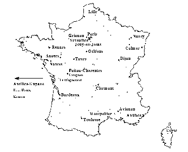

Au joli mois de mai, d'intrépides chevaliers de l'octet venant
d'un lointain royaume ont tenté d'investir la citadelle informatique
d'une vénérable institution de notre Enseignement supérieur.
Au joli mois de mai, d'intrépides chevaliers de l'octet venant
d'un lointain royaume ont tenté d'investir la citadelle informatique
d'une vénérable institution de notre Enseignement supérieur. Au joli mois de mai, d'intrépides chevaliers de l'octet venant
d'un lointain royaume ont tenté d'investir la citadelle informatique
d'une vénérable institution de notre Enseignement supérieur.
Après avoir déjoué la vigilance des sentinelles, ils ont pris pied sur les chemins de ronde de la forteresse et sont même allés reconnaître les souterrains conduisant à d'autres places fortes. Puis ils ont battu en retraite sans avoir provoqué d'irréparables dégâts. Faut-il pour autant crier victoire, faire chanter un Te Deum et distribuer des décorations ?
Restons modestes et prudents, car rien ne prouve jusqu'ici qu'ils n'ont pas discrètement laissé derrière eux quelques bombes à retardement ou quelques germes pathogènes.
Et puis, souvenons-nous de Vercingétorix étrillant les légions romaines à Gergovie avant de se laisser enfermer et vaincre à Alésia. Souvenons-nous encore de nos cousins canadiens rejetés à la mer à Dieppe en 1942, en prélude au débarquement réussi du 6 juin 1944.
Les légionnaires de l'Internet ne seraient-ils venus que pour tâter nos défenses ? Ne reviendront-ils pas, un jour ou l'autre, avec force balistes, onagres et béliers ?
Que faire en attendant ? Comme le lieutenant Drogo, préparez-vous sans relâche à repousser l'assaut des Tartares. Veillez à l'état de vos remparts, inspectez vos courtines, vos herses et vos mâchicoulis. Entretenez l'allant de vos défenseurs et donnez-leur d'indéchiffrables mots de passe. Assurez-vous de la fidélité de vos mercenaires. Faites régulièrement l'inventaire des clés de vos poternes et désinfectez les cloaques de vos bastions. Enfin, relisez César, Clausewitz et surtout les dix précédents numéros de Sécurité informatique.
Philippe Schreiber
Fonctionnaire de Défense


Aux environs du 15 août, un avertissement provenant de la meilleure source nationale nous prévint de l'imminence d'une attaque par virus, programmée pour le 22 août. Le malfaiteur portait, nous dit-on, le nom de Hare et répondait aux surnoms de Khrishna ou d'Eutanasia, selon ses zélateurs. Consultant nos informateurs internationaux habituels, nous trouvâmes bien trace de la bête mais son annonce était noyée dans le bruit de fond habituel à ce genre d'événements, sans insistance particulière.
Sur un serveur Web spécialisé figurait une description effrayante de l'animal : polymorphique, rusé, apte à se dissimuler sous des apparences changeantes et causant d'effroyables et quasi irrémédiables dégâts. Mais nous avions lu Florian et c'était le mois d'août qui, on le sait, est propice à la renaissance des serpents de mer. C'est pourquoi nous décidâmes de ne pas crier au loup. Et puis, ne venions-nous pas de diffuser à la communauté un bon détecteur éradiqueur (?) de virus ? Enfin, on sait qu'au huitième mois de l'année, les laboratoires ne sont pas surpeuplés.
Une semaine après la date fatidique, nous cherchons encore des récits relatant les dégâts commis. Doit-on soupçonner, une fois de plus, les éditeurs d'anti-virus d'avoir saisi l'occasion de se faire un bon coup de pub ? Car tous, comme un seul homme, ont proposé gratuitement sur l'Internet un remède préventif et curatif. Renseignements pris, il semblerait que ce virus ait fait peu de dégâts en France, ayant surtout sévi en Nouvelle-Zélande et en Australie.
Deuxième date d'apparition : le 22 septembre. Peut-être... Mais comme ce sera (c'était ?) un dimanche, il n'y a guère que les ordinateurs personnels qui courent un risque. Le mieux n'est-il pas, alors, avant d'arrêter sa machine le samedi avant minuit, de changer la date en la faisant passer directement au 23 ? Quitte à la remettre à cette valeur le lundi suivant.

A partir de ce numéro, nous allons demander à l'un des établissements de recherche placés sous la tutelle de notre Ministère de nous présenter sa conception et ses réalisations en matière de sécurité informatique. C'est l'Institut national de la Recherche Agronomique qui a accepté d'ouvrir la série.
 L'INRA, qui fête cette année son cinquantenaire, est un EPST placé sous la tutelle conjointe des ministres chargés de la recherche et de l'agriculture. La mission qui lui est confiée consiste à garantir au consommateur une alimentation de qualité, à assurer la compétitivité des entreprises agricoles et agro-alimentaires et à contribuer à un aménagement harmonieux du territoire ainsi qu'à une gestion durable des ressources naturelles. Huit mille six cents personnes y sont employées (45% de chercheurs et ingénieurs, 45% de techniciens et 10% d'administratifs).
L'INRA comprend 22 centres de recherche, 260 unités de recherche (dont 50 unités mixtes ou associées), 80 unités expérimentales et plates-formes technologiques et 100 unités de service, l'ensemble étant réparti sur tout le territoire national (avec une antenne aux Antilles). L'INRA gère 12 000 hectares de terrains expérimentaux.
L'autorité du Directeur général de l'INRA s'exerce sur cinq Directions scientifiques et deux délégations régionales qui ont en charge la coordination des activités de 22 Départements de recherche, cinq Directions administratives et cinq Directions relationnelles, dont la Direction de l'informatique. Cette dernière est chargée de la mise en oeuvre de la politique informatique définie par la Direction Générale. L'INRA dispose d'un serveur d'informations accessible à l'URL http://www.inra.fr
Les missions de la DI consistent pour l'essentiel à :
La DI a aussi comme rôle la recherche de solutions standardisées, en particulier en matière de télécommunications et de serveurs collectifs, leur optimisation et leur rationalisation. Elle dispose pour leur financement de crédits nationaux, ce qui permet de mieux maîtriser le dispositif global. Des plans d'actions pluri-annuels prenant en compte les évolutions technologiques sont élaborés périodiquement en collaboration avec les autres Directions.
Tous personnels confondus, la DI comprend une centaine de personnes réparties dans une vingtaine d'unités informatiques de Centre (comprenant de un à trois ou quatre ingénieurs et techniciens), quatre unités spécialisées, et une unité de direction. La DI compte moins de la moitié des informaticiens présents à l'INRA.
Tous les centres INRA sont équipés de réseaux à haut débit. Les connexions à RENATER, de 64 Kbps à 2 Mbps, ont été progressivement réalisées au fil des années. Le parc matériel est aujourd'hui constitué de quelques centaines de stations et serveurs sous Unix (Sun, IBM, HP, Silicon Graphics...) administrés par les informaticiens de la DI ou non, et de 2 mainframes IBM dont l'un est géré par le Département de Génétique animale. Le poste de travail est majoritairement le micro (quelques milliers de PC), parfois le Mac ou le terminal X (quelques centaines au total).
Les technologies de l'information et les systèmes d'information sont maintenant intégrés à des degrés divers dans la majorité des activités scientifiques ou de gestion de l'Institut. Pour remplir ses missions, l'INRA devient ainsi chaque jour de plus en plus tributaire de leur bon fonctionnement. C'est pourquoi tous les aspects des risques impliqués par cette utilisation banalisée de l'informatique doivent, autant que faire se peut, être maîtrisés. Les expériences vécues au cours des dernières années ont montré à diverses reprises que ces risques ne pouvaient être négligés, entraînant dans les cas les plus graves le dépôt de plaintes auprès des autorités compétentes. Le Directeur général de l'INRA a ainsi nommé, fin 1994, un chargé de mission ayant comme objectif la mise en place d'une politique globale et cohérente de sécurité des systèmes d'information.
Une politique de sécurité doit s'appuyer sur des ressources humaines, une organisation, des méthodes et des outils. Sur les deux premiers points, on peut considérer qu'à l'INRA la situation est relativement favorable (les moyens sont néanmoins toujours insuffisants !), malgré la grande dispersion géographique de ses centres. Les personnels chargés de la gestion des moyens collectifs dépendent en effet dans leur majorité d'une même Direction, leur action est coordonnée au niveau national et leur responsabilité dans l'application de la politique de sécurité devrait pouvoir être renforcée prochainement. De la même manière, la DI gère globalement tout ce qui est relatif aux télécommunications, sans pratiquement demander de participation financière aux utilisateurs... pour le moment, du moins.
En ce qui concerne les aspects méthodologiques, une aide a été demandée en 1995 au Service Central de la Sécurité des Systèmes d'Information et un plan de travail a été défini avec son appui. Si la sécurité informatique dans un organisme de recherche présente, à n'en pas douter, des spécificités qui ne sont pas toujours faciles à percevoir, l'intervention du SCSSI a conduit cependant à la conception d'un guide méthodologique qui a été élaboré avec l'appui de la société CR2A-DI. Ce guide a été mis en oeuvre au cours de deux expériences réalisées sur le centre de Jouy.
La démarche retenue va de la description du système d'information jusqu'à la définition du plan d'action. Elle fait appel à la méthode MELISA qui, clairement, ne peut s'appliquer que dans quelques cas exceptionnels dans notre organisme. Le guide conserve cependant tout son intérêt pour tout ce qui est relatif aux services rendus par le système d'information, pour la description des matériels, des logiciels, des réseaux utilisés, ainsi que pour l'identification des besoins de sécurité en termes d'intégrité, de confidentialité et de disponibilité (facteur important au regard des utilisateurs). Les résultats des audits réalisés en 1995 ont ainsi fait apparaître dans une Unité une vulnérabilité importante dans le domaine de la continuité de fonctionnement. Ils ont été exploités en 1996 par la société Syslab qui est intervenue pour définir les adaptations des procédures existantes, et pour chiffrer les moyens nécessaires à la mise en oeuvre d'un secours opérationnel des applicatifs de gestion.
Sachant que la sécurité est l'affaire de tous, des actions de sensibilisation et de formation sont indispensables. C'est ainsi qu'en collaboration avec la formation permanente nationale, dans la mesure du possible, lors des formations organisées à l'INRA, les règles élémentaires relatives à la sécurité informatique sont rappelées, qu'il s'agisse des textes réglementaires, de la gestion du poste de travail, des mots de passe ou de l'utilisation des logiciels anti-virus. Soulignons, à ce propos, que la DI vient d'acquérir les logiciels F-PROT et TBAV qui seront distribués gratuitement aux équipes de l'Institut. Dans le même ordre d'idées, et parce que la sécurité n'est pas une préoccupation récente, il existe depuis 1993 un Règlement général de l'utilisation des moyens informatiques de l'INRA à la disposition de toute personne travaillant à l'Institut. Enfin une note de service relative à la Création d'infoservices sur Internet, secteur en pleine évolution, a été publiée au printemps 96. Les problèmes liés à l'utilisation du WEB, qui réserve régulièrement son lot de surprises, méritent à n'en pas douter, dès à présent, une attention particulière.
Comme on a coutume de le dire, une politique de sécurité ne peut réussir qu'avec un engagement fort de la Direction générale, un budget spécifique et des moyens. Le début d'organisation mis en place devra rapidement être conforté. De nombreuses difficultés subsistent. Les choix d'équipements et d'infrastructures ne sont pas immuables. Nous n'échapperons pas dans certains cas à l'utilisation de mécanismes de sécurisation de plus en plus sophistiqués. Les techniques d'identification et d'authentification des utilisateurs devront être améliorées, de même que devront être étudiées celles relatives au scellement, voire au chiffrement. Ces évaluations sont d'autant plus indispensables qu'aujourd'hui certains produits, pour diverses raisons, intègrent peu ou mal des fonctionnalités de sécurité. Il ne fait pas de doute que nous nous appuierons sur les expériences réalisées dans des organismes qui nous sont proches, mais il est vrai aussi que nous ne maîtriserons bien nos problèmes que si nous mobilisons nous-mêmes un minimum de compétences.
Marcel Leroux
Chargé de Mission à la
Direction de l'Informatique

Plusieurs lecteurs de Sécurité Informatique nous ont fait part de leur étonnement (le mot employé était parfois plus fort) devant le choix du logiciel anti-virus dont nous avons acquis la licence de distribution pour les établissements du CNRS.
Vous pensez bien que ce produit n'a pas été choisi au hasard mais après une enquête assez longue sur l'Internet : forums de Usenet, listes de diffusion et serveurs Web spécialisés.
On nous a même reproché de ne pas avoir conduit directement des tests. Sur ce point, l'évidence, le bon sens et la technique répondent pour nous. Sachant qu'il existe quelques 7 000 virus recensés pour la plate-forme PC, il aurait d'abord fallu étudier les grandes "races" de virus selon leur structure, leur mode d'attaque, les dégâts qu'ils occasionnent, leur probabilité d'apparition, leur statistique de répartition sur le territoire national, etc. pour tenter de définir un jeu d'essai suffisamment représentatif.
Ensuite - et c'est là que le bât blesse sérieusement - où et comment se procurer des souches de ces parasites ? Vous vous doutez bien que les virus ne sont pas en vente libre ! Pour les obtenir, il ne suffit pas de se proclamer agent du CNRS. Mieux vaudrait sans doute être un pirate reconnu ou un hacker redouté et, ainsi, aller s'approvisionner à des sources clandestines. Nous en connaissons quelques-unes sur l'Internet mais elles eussent été insuffisantes.
Quant aux procédures de test elles-mêmes, il suffit de lire les polémiques entre laboratoires de test reconnus, utilisateurs d'ordinateurs et victimes de virus, publiées dans la liste VIRUS-L Digest (owner-virus-l@Lehigh.edu), par exemple, pour comprendre combien il est difficile d'établir un protocole d'essai impartial et significatif. Nous n'avons ni la prétention, ni les moyens de pouvoir faire jeu égal avec ceux qui ont les compétences et l'expérience nécessaires.
Voici, à l'appui de notre choix, la première et la dernière colonne du résultat d'une étude publiée par Virus Bulletin (janvier 1996) : http://www.virusbtn.,com/Comparatives/Dos/199601/ scanres_tables.html), triées par ordre de qualité décroissante.
Comme la loi interdit toute publicité comparative, nous avons supprimé les noms des autres logiciels à l'exception de MS-DOS puisque cet anti-virus n'est pas un produit vendu séparément. Les pourcentages traduisent une moyenne de détection sur trois types de virus.
| AVP | 99.3% | 97,6 % | 97,2 % | 96,5 % | |||
| 95,1 % | 93,0 % | 91,4 % | 91,2 % | ||||
| 89,6 % | 89,2 % | 89,2 % | 89,1 % | ||||
| 88,5 % | 87,2 % | 85,4 % | 84,2 % | ||||
| 79,9 % | 79,2 % | 76,3 % | 72,8 % | ||||
| 66,9 % | 64,6 % | 61,0 % | MS-DOS | 34,0 % |
Ceux de nos lecteurs intéressés par tout ce qui touche
aux virus et aux anti-virus consulteront avec profit les serveurs Web suivants
:
http://www.bocklabs.wisc.edu/~janda/sladerev.html
http://www.virusbtn.com
http://www.datafellows.com
http://cs.ucr.edu/pub/virus-l/docs/reviews/pc
http://csrc.ncsl.nist.gov/virus/
http://www.drsolomon.com/avtk/reviews

Véronique (Acte 2) - André Messager
Après plus de 29 ans de bons (j'ose le croire) et loyaux (ça, j'en suis sûr !) services au CNRS et bien plus de 40 ans de vie active, j'ai décidé de "faire valoir mes droits à pension". Ce numéro de Sécurité informatique est donc le dernier dont j'assume la responsabilité, mais il devrait y en avoir d'autres.
Au moment de mettre sous presse, le nom de mon successeur n'est pas encore connu. Je lui souhaite néanmoins bonne chance !
Michel Dreyfus

Par suite de problèmes liés à la reproduction des disquettes, la distribution de l'anti-virus AVP annoncée dans Sécurité informatique de juin a été retardée jusqu'à la première quinzaine d'août. Rappelons que ce logiciel ne convient qu'aux PC (les compatibles IBM).
Pour les Mac, où le nombre de virus est actuellement faible, on
s'accorde à reconnaître que le freeware Disinfectant est un
bon produit. On peut en trouver la dernière version (datant d'avril
1995) sur le serveur FTP
ftp.acns.nwu.edu/pub/disinfectant/disinfectant36.sea.hqx
D'autre part, en ce qui concerne les mises à jour, celles-ci seront placées en libre accès sur le serveur WEB du Siège dont l'URL est rappelé à la page 1 de chaque bulletin.

Des "scientifiques révolutionnaires" auraient piraté le réseau Internet du Ministère argentin des Affaires étrangères pour "lutter contre la corruption des hommes politiques" nous apprend une dépêche de l'AFP en date du 7 septembre.

On sait que le nombre de virus recensés sur les PC est un peu inférieur à dix mille. Du côté des champs de pommes, c'est maintenant une quarantaine de virus dérivant d'un peu moins de vingt souches qu'on y dénombrerait. "Another reason to use Macintosh !" dit l'auteur de la présentation Web http://members.aol.com/macutility/macvirus/the_viruses.html qui détaille le comportement de ces virus et les moyens de s'en débarrasser.

Après le serveur du Ministère de la Justice des Etats-Unis, c'est le tour de celui de la CIA (Central Intelligence Agency) d'être victime de piratage. La très officielle agence Reuter nous apprend, en effet, que ce serveur a été fermé le 19 septembre après que la page d'accueil de la présentation Web (http://www.odci.gov/cia) ait affiché "Welcome to the Central Stupidity Agency" en proposant des rubriques telles que Nude girls. Cette "page de remplacement" était visible, fin septembre, à l'URL http:// www.ilf.net/hacked.websites/cia/).